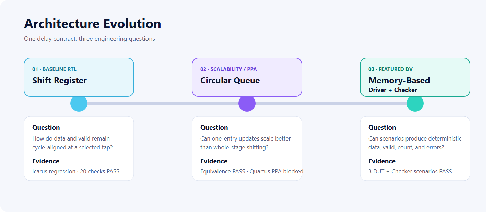
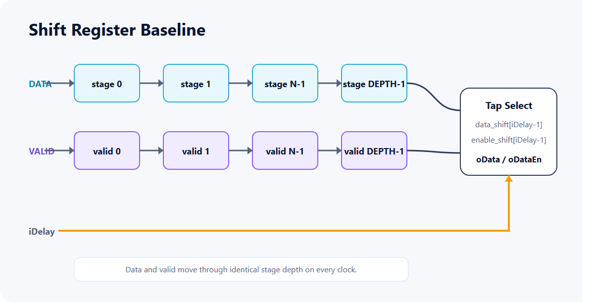
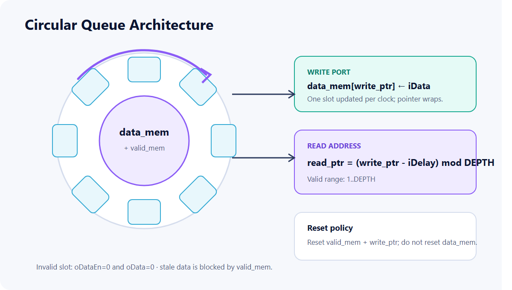
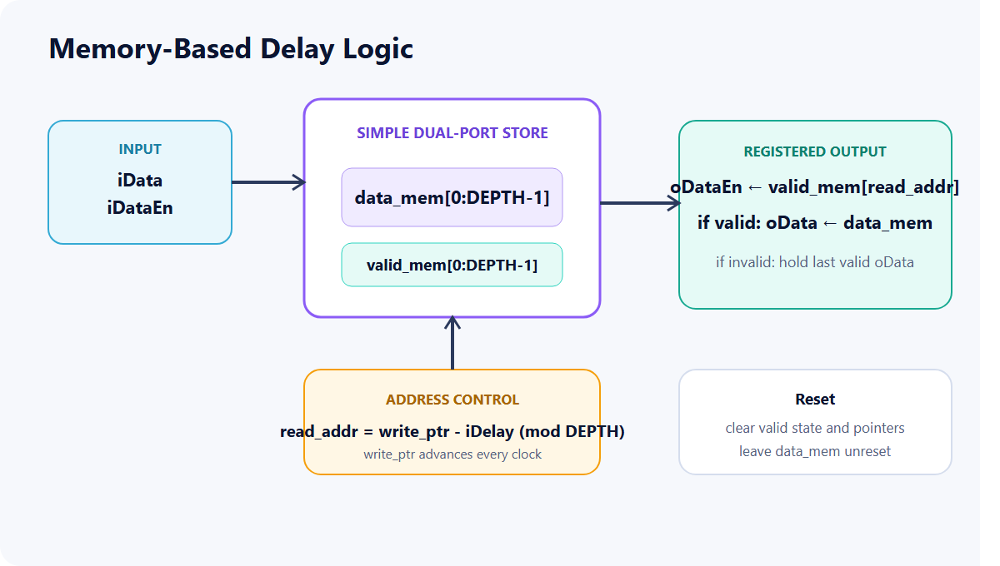
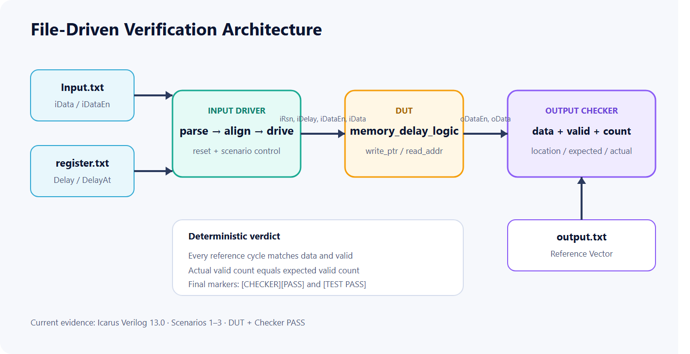
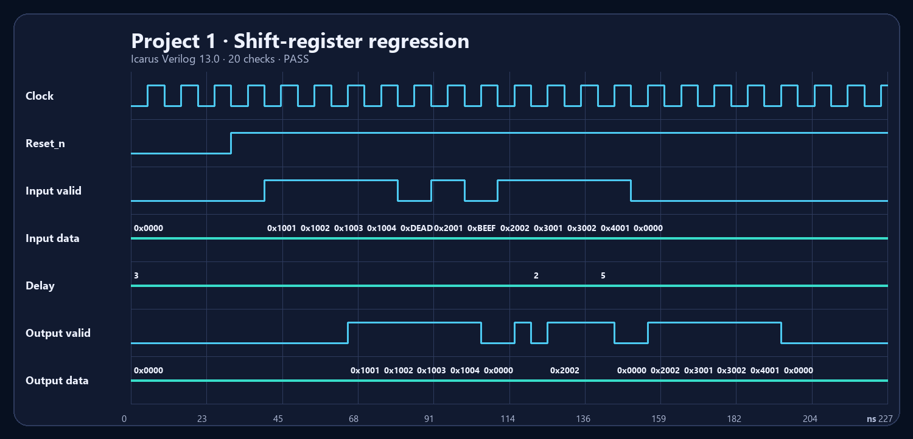
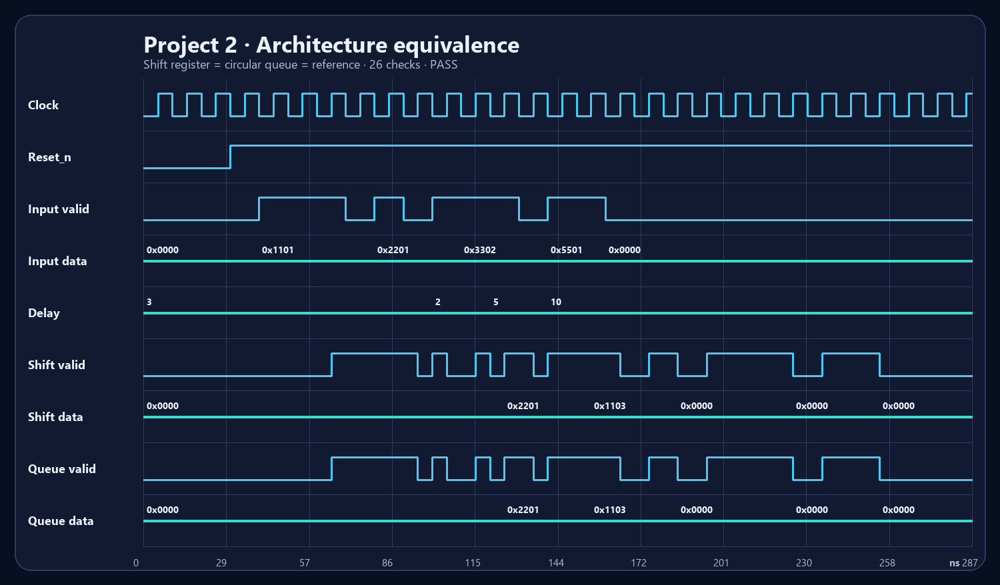
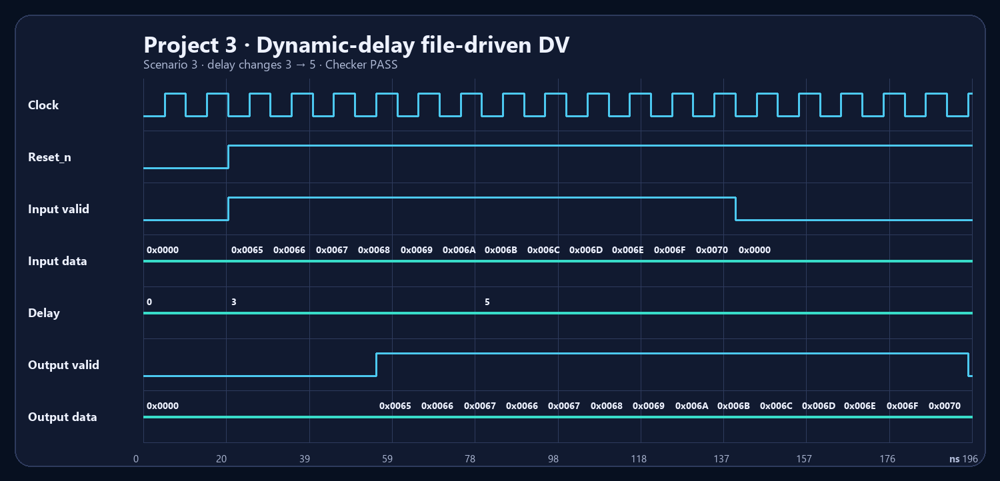
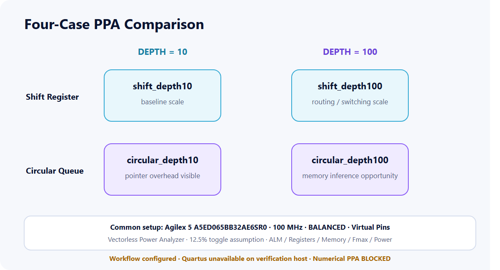

Shift register
Data and valid traverse equal depth; iDelay-1 selects the historical transaction.
One delay contract is implemented as a shift register, circular queue, and memory-based DUT. The portfolio includes actual Icarus Verilog 13.0 regression logs, VCD files, and rendered waveforms—not only design descriptions.
Project 1 establishes data/valid alignment. Project 2 replaces whole-stage movement with one-slot writes. Project 3 adds repeatable file-driven stimulus and deterministic error reporting.

Data and valid traverse equal depth; iDelay-1 selects the historical transaction.
(write_ptr-iDelay) mod DEPTH and one-slot writes preserve the delay behavior.
Input Driver, DUT, and Output Checker compare data, valid, and final output count.
3 scenarios PASSEvery implementation treats data and valid as one transaction. Memory-coded designs leave the data array unreset and use valid state to prevent stale data from becoming observable.




These are not expected-waveform illustrations. They are rendered directly from VCD files generated by Icarus Verilog 13.0 while executing RTL and testbenches from commit c356ade.



Functional simulation is labeled PASS only where an executed log exists. Synthesis and numerical PPA remain BLOCKED because Quartus was not installed on the verification host.
| Project | RTL | Simulation | Synthesis | PPA |
|---|---|---|---|---|
| 1 · Shift Register | Reviewed | PASS Icarus 13.0 · 20 checks | BLOCKED Quartus unavailable | N/A |
| 2 · Circular Queue | Reviewed | PASS 2 implementations + reference · 26 checks | BLOCKED Quartus unavailable | BLOCKED No Fit/Timing/Power reports |
| 3 · Memory DV | Reviewed | PASS Scenarios 1–3 · Checker + Test PASS | BLOCKED Quartus unavailable | N/A |
Four DEPTH 10/100 projects share device, clock, optimization, virtual-pin, and toggle assumptions. Without Quartus Fit, Timing, and Power reports, no area, Fmax, or power advantage is published.

Numerical PPA: BLOCKED. The host scan found no quartus_sh, quartus_fit, quartus_sta, or quartus_pow. Blank CSV cells were not visualized and estimates were not fabricated.
On Windows with PowerShell and Icarus Verilog 13.0, this command rebuilds the logs, VCD files, and JSON evidence manifest.
powershell -NoProfile -ExecutionPolicy Bypass -File .\scripts\run_all_verification.ps1